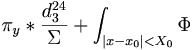

De: La Frikipedia, la enciclopedia extremadamente seria.
De: La Frikipedia, la enciclopedia extremadamente seria. De: La Frikipedia, la enciclopedia extremadamente seria.

Bla Bla Bla: máxima expresión de la lengua cibor adaptada por los humanos como una abreviación de uso común. Configurando un todo filosófico Bla bla bla está más cerca de ser un sistema complejo de comunicación binaria que de tratarse simplemente de 4 palabras (claramente...)Enemiga acérrima de etcétera(vamos!, que se llevan muy mal...) es utilizda con mucha más elegancia y elocuencia. Sirve, tanto para abreviar, o tomar el pelo (uso aún no demostrado, faltas referencias...) echar la madre resumir en pocas palabras (que según el frikipedista anterior no es lo mismo que abreviar)
Pese a lo pernicioso (no sé que significa...) de su pronunciación aún no descifrada del todo ha superado con creces el uso de otras palabras tales como Dios, berenjena (aunque parezca increíble) y cani. Bla Bla Bla de origen eurovisivo venía a ser un cántico de guerra. "Blaaa, bla, bla, blaaa, bla, bla, blaaa, bla, bla, blaaa, blaaaa, bla, bla, blaaaa bla bla, blaaá!" (las he contado y encajan perfectamente)(con ritmo basado en proporciones matemáticas aún no resuetas) que con compras de votos neofascistas se convirtió en himno oficial de Espiña hasta ser derogado por el actual "la Canción del colacao" sólo aceptado en los círculos más próximos a Matrix.
A Bla Bla Bla, como única frase hecha que ha alcanzado el poder democráticamente se le adjudica la creación del sudoku y quien diga lo contrario miente como un vil bellaco.
El momento de máxima esplendo y caso único entre los usos del Bla Bla Bla es el del NIÑO LOCO ALEMÁn que haciendo uso de tan sólo estas 6 palabras es capaz tanto de pedir pizza, arreglar extrasensorialmente el ordenador, violar a un perro y un largo Bla Bla Bla de cosas.

|
Y el Niño Loco Alemán ante su ordenador dijo: Bla Bla Bla y el mundo se hizo. Entonces vio el Niño Loco Alemán que aquello era bueno y todos nos regocijamos. | 
|
| Génesis blabática |
Son muchos los que dudan de la veracidad de la creación del mundo por el Niño Loco Alemán dado qeu todos sabemos que el mundo no existe.
También conocido como blablablá, bla bla blá puede ser utilizado como sinónimo de cualquier otra palabra de forma que tiene mucho y diferentes usos.
-¿Te vienes a tomar algo a mi casa y Bla Bla Bla? Donde Bla Bla Bla viene a ser: "Jugamos al parchís, cenamos berejenas y si eso follamos, es decir, soplamos con el fuelle" El Bla Bla Bla todavía no ha sido incluido en las Técnicas militares para ligar dado su carácter pacífico.
-Si es que no puedes seguir así.... Encendemos el automático y lo convertimos en un agradable ronroneo subacuático... Bla Bla Bla. Donde Bla Bla Bla viene a ser presumiblemente (nadie ha sido capaz de demostrarlo aún) "Ay que guapo mi niño!</pre>
-¡Hijo de Bla Bla Bla, puta Bla Bla Bla de mierda Bla Bla bla! En este caso Bla Bla Bla viene a significar en conjunto "Me he acostado con tu madre, no veas que bien hace las croquetas y sí, yo soy tu padre."
Frase Bla Bla Bla célebre donde las halla del lider espiritual Dalai Darth Vader
En tanto que insulto, estas cinco palabras Bla Bla Bla está en un nivel intermedio entre Emo y "con tres cervezas te podria disfrutar" de forma que se convierte en las seis palabras más insultantes a excepción de Bush. Su estructura compuesta y polivinila hace que crezca en intesidad, volumen y temperatura de forma exponencial según la formula:  De donde se desconocen los factores ni que significan las letras ni nada.
El Bla Bla Bla ha sido utilizado durante generaciones como utilidad maligna.
A continuación, en claro homenaje al anterior frikipedista, se exponen ejemplos del mal uso del Bla Bla Bla. Como sé que no lo vais a leer pues saltémonos estos dos espacios...
Bla Bla Bla es en Bla Bla Bla, un grupo de Bla Bla Bla que hace referencia a Bla Bla Bla. Nosotros lo usamos, sobre todo en Bla Bla Bla Bla Bla Bla Bla Bla Bla Bla Bla Bla, y en algunas medidas Bla Bla Bla Bla Bla Bla Bla Bla Bla. Es de común uso en campañas presidenciales, donde hay Bla Bla Bla menos cumplimiento de ese Bla Bla Bla y más Bla Bla Bla a nivel presupuestario, Bla Bla Bla, Bla Bla Bla, Bla Bla Bla y por último Bla Bla Bla. En conclusión Bla Bla Bla es Bla Bla Bla Bla Bla Bla Bla Bla Bla.
(Definición hecha, lograda y resumida por un Frikipedista, que demostro pésima actitud al hacerla)
Apuntes de la Investigación: " Me acerqué cautelosamente al objetivo, es decir, a quien le haría la pregunte, me le acerqué y le dije "¿Qué cree usted acerca del significado de "Bla Bla Bla"?, a lo que el sujeto responde: Mijito, Bla Bla Bla Bla Bla Bla Bla Bla Bla Bla Bla Bla Bla Bla Bla Bla Bla Bla Bla Bla Bla Bla Bla Bla Bla Bla Bla Bla Bla Bla Bla Bla Bla, ¿No es muy extensa esa definición? (Dije yo) a lo que el sujeto, sigue de manera violenta respondiendo: Usted es un Bla Bla Bla, muy Bla Bla Bla, y se cree muy Bla Bla Bla porque es un Bla Bla Bla un mocoso rastrero hijo de la puBla Bla Bla..." (Aquí suena la musiquita desgraciada con la que se duermen los bebés, nuestro investigador se queda dormido, y le pasa lo que le pasa en la imagen)
La canción de guerra Bla Bla Bla
Autor(es):